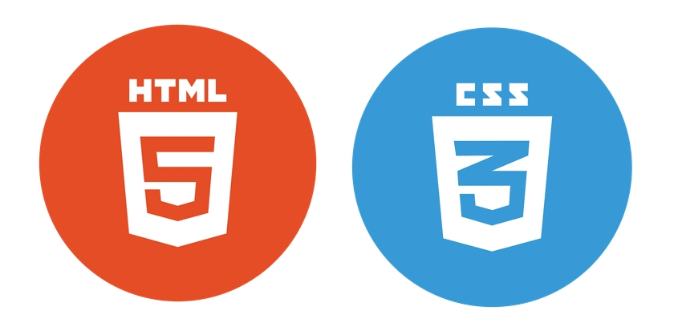
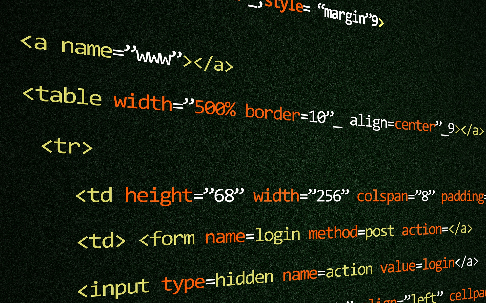

Password Management
HyperText Markup Language and Cascading Style Sheets, commonly known as HTML and CSS, are the building blocks of most websites on the internet. They’re responsible for the layout and visual design that give the page it’s look overall. People interact with HTML and CSS everyday while they check social media accounts, look at forums, shop online, etc. As noted in the name HTML is a markup language. Markup languages are used to enhance word-based documents. They were originally used to allow the author to underline and bold certain words. The language also made text larger to note the title and headings on a page. The author was able to make these changes with text running in the background of a document, invisible to the reader.
The background text uses something called elements to control the attributes of the document. Elements are instructions noted to the document or web page. Most elements are made up of three parts. The first part is an opening tag. Tags are formatted in between less than and greater than symbols (<>). The next piece is the text-based instruction with a letter or a word. Attributes can also be added in this space which can be used to identify different elements. The final piece is the closing tag which contains a forward slash (/). Elements can be either inline type or a block type. Inline elements stay in the space they take up while block elements fill the total space on a page. This allows for a lot of different changes in the layout of the page. CSS is the area where the styling of the web page is done. The instructions to the document or web page are in the form of CSS statements or rules. CSS rules are made up of three pieces. It starts with a CSS selector. These can be as simple as calling the element in the document to using an HTML Attribute to point out a specific element. Once selected a property is called. This is the part you want changed in the document such as font or color. The final piece is the CSS Value. This is the update you want to complete such as changing the color to blue.
The background text uses something called elements to control the attributes of the document. Elements are instructions noted to the document or web page. Most elements are made up of three parts. The first part is an opening tag. Tags are formatted in between less than and greater than symbols (<>). The next piece is the text-based instruction with a letter or a word. Attributes can also be added in this space which can be used to identify different elements. The final piece is the closing tag which contains a forward slash (/). Elements can be either inline type or a block type. Inline elements stay in the space they take up while block elements fill the total space on a page. This allows for a lot of different changes in the layout of the page.
CSS is the area where the styling of the web page is done. The instructions to the document or web page are in the form of CSS statements or rules. CSS rules are made up of three pieces. It starts with a CSS selector. These can be as simple as calling the element in the document to using an HTML Attribute to point out a specific element. Once selected a property is called. This is the part you want changed in the document such as font or color. The final piece is the CSS Value. This is the update you want to complete such as changing the color to blue.